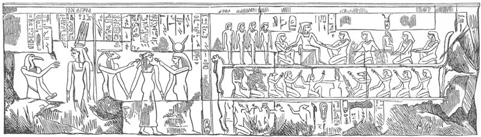

According to Euclid, parallel
lines never meet. But Euclid didn't work in the field of comparative
religion. There, parallels between the mysteries and Christianity seem
to intersect all over the place. Beginning in the 19th century, there
has been a thread of scholarly research that has devoted itself to
uncovering
specific and close correspondences between the story of Jesus and the
myths of the pagan savior gods. While interest in such parallels has
been kept alive
even into the 21st century, the older scholarship on which this type of
exercise was based has fallen into
disrepute,
although to what extent this is deserved is a matter of debate.
Mainstream New Testament scholars, as the 20th century progressed,
largely dismissed such parallels as
part of their reactionary antagonism against the History of Religions
school.
Outright apologists, especially in recent years and especially on the
Internet, have dumped on the whole business, claiming it is little
short of a farce and without foundation. Poor old Kersey Graves, with
his now-notorious The World's
Sixteen Crucified
Saviors, which has come to typify the genre (though
inappropriately),
has become a
punching bag. But the dismissive attitude is unjustified, even if much
care and qualification needs to be brought to the pursuit of such
parallels.
Part of the problem lies in the
nature of the evidence being appealed to on the pagan side. The primary
sources from which such comparisons are made are a motley uncoordinated
array of texts and fragments of texts, artifacts, frescoes, uncertain
records of traditions and rituals, excavated temples and places of
worship that require interpretation and a careful gleaning of their
significance. A good example of an alleged parallel one often
encounters is the birth of Mithras being attended by shepherds. We have
no literary account of this event from Mithraists such as we do in the
Matthew and Luke nativity stories. The idea comes from several
sculptural representations of Mithras' birth, in which he emerges from
the head of a rock, the rock being the cosmos. Around the base of the
rock
are attending figures who have suggested to some the idea of shepherds.
(Manfred Clauss, The Roman Cult of
Mithras, p.69, is of the opinion that "there are no grounds for
calling these two figures 'shepherds', in the wake of the Christian
nativity story," probably because they could also be interpreted as the
familiar figures of Cautes and Cautopates of the tauroctony
representation.) The rock itself, and the known fact of the tradition
that Mithras slew the bull in a cave, have suggested that the birth was
seen as taking place in a cave, which not only supports the shepherds
interpretation, it leads to the 'parallel' that Mithras was born in a
cave as Jesus was born in an outdoor enclosure.
An example of a better attested
parallel is the tradition that Dionysos turned water into wine at a
wedding
—his own, with Ariadne. This is mentioned
by Walter Otto in his Dionysos: Myth
and Cult, p.98, and is derived from Seneca's tragic play Oedipus. Thus there can be no doubt
about this one being a legitimate parallel. Might the author of the
Gospel of John have consciously copied this tradition in his similar
miracle of the wedding at Cana? We don't know. The Dionysian myth is
tied to the common claim that at festivals of Dionysos, wine would
miraculously appear in empty vessels, or that water set out overnight
would be
changed to wine by morning.
Other types of parallels are more
subtle, involving comparisons of themes and motifs in the literature.
According to Gerald Massey (and others), one of the characterizations
of the Egyptian Horus (son of Osiris and Isis) was as the "good
shepherd." Massey refers to portraits of Horus "with his crook in hand,
shepherd(ing) the flocks of Ra beyond the grave" [Ancient Egypt: Light of the World,
p.487]. Here he does not identify the location and nature of this
'portrait', but he backs it up with references to the literary "Ritual"
(Egyptian Book of the Dead). Horus, says Massey, "came into the world
as shepherd of his father's [Osiris'] sheep, to lead them through the
darkness of Amenta [the Egyptian underworld] to the green pastures and
still waters of the final paradise upon Mount Hetep in the heaven of
eternity"
—which certainly justifies styling
Horus as a savior figure, who bears resemblance to Jesus (and other
divinities) as one who descends to an underworld to rescue the souls of
the righteous.
The "green pastures" and "still
waters" in Massey's quote are phrases used to deliberately echo Psalm
23, since similar phrases are used in the Book of the Dead to refer to
Horus' precincts; Amenta becomes the "valley of the shadow of death" of
Psalm 23. The Psalms are relatively old, and its ideas could reflect
themes that were originally derived from Egypt. Massey suggests: "The
portrait of Horus the good shepherd, who was likewise the arm of the
lord [Osiris] in this picture of pastoral tenderness, was readapted by
the Hebrew writer for the comforting of distressed Jerusalem" [op cit, p.532]. Even older is
Isaiah 40:11, in which the prophet foretells the coming of God (not
Jesus), who "will tend his flock like a shepherd and gather them
together with his arm; he will carry the lambs in his bosom and lead
the ewes to water." (Second) Isaiah was prophesying the end of the
Exile (6th century BCE), and Massey suggests the very reasonable idea
that such images could well have been derived from Egypt and the
ancient Horus tradition. Whether Horus was a direct inspiration for the
later imagery of the shepherd as applied to Christ cannot be said; but
if Jesus as the Good Shepherd was an extension of God as shepherd, one
might well postulate that the original source and ancestor of both
ideas was the Egyptian Horus.
Some Background
Considerations
But before we delve deeper into
such similarities, we need to step back and consider certain aspects of
the situation. It seems to be assumed by some proponents of such
parallels
that Christianity formulated itself and its Jesus on the basis of this
type of precedent in the mystery cult myths and other sources. But this
overlooks the fact that in the earliest record of Christianity, as in
Paul and other epistle writers, there is no sign of such 'biographical'
parallels. In fact, there is no biography at all. The parallels in Paul
relate entirely to the principles
of salvation theory we have looked at in the earlier articles of this
series. Paul gives us no 'myth' of Jesus on earth. His death and
resurrection of Christ are soteriological constructs, not historical
ones. The vast majority of parallels presented by researchers
like Gerald Massey find no echo in the earliest writings of Christians.
If we do not read the Gospels into the background of those epistles,
Paul
cannot be accused of 'borrowing' any of this stuff from the mystery
myths, beyond elements like death and rising, unity with the god, a
homologic sharing in the god's experiences, baptismal rebirth, and
sacred
meals commemorating mythical activities of the god. Such ideas can
certainly be interpreted as dependent, conscious or otherwise, on the
mysteries, but nothing of it is 'biographical'. And since nothing
biographical about the early Christian Christ can be found before the
Gospels, the biographical elements become the responsibility, as far
as we can see, of the evangelists. The Gospels are essentially the adding of an earthly myth to a
spiritual one.
This contrast between Pauline
Christianity and the mysteries is often pointed out. The fact that Paul
doesn't have anything like the extravagant 'irrationalities' of the
savior god biographies is regarded as an asset. But then neither does
he have any corresponding 'rationalities'. First of all, the cults had
centuries to develop their myths, whereas Christianity was of recent
vintage in the time of Paul. The latter is no excuse, of course, for
the Christian faith
not to possess biographical traditions of their savior if he had indeed
lived in recent history. The very absence of such things
suggests that the origin and character of the Christian Christ and his
work of redemption reflected the
salvation philosophy inherent in Platonism and its concept of a higher
spiritual world.
The fact that this is the almost exclusive venue of the Pauline Christ
suggests that the initial Jesus operated within this
philosophical and
cosmological atmosphere at the turn of the era, when divinities
inhabited and communicated from the heavens, descending and ascending
its layers to grapple
with the evil spirits (and occasionally be killed by them), and rescue
souls from Hell, with no sign of earthly incarnation being a factor or
necessity until the Gospels came along.
The question of what spheres the gods of the mysteries were believed to operate in during this period is complicated by the fact that their initial myths arose at a time when such divine activities were thought to have taken place in a sacred prehistoric time or primordial history, more or less on earth, although some divine processes (such as Cronos eating his children) would likely have been regarded as heavenly events. Such myths were still operable at the turn of the era, but it becomes difficult to know how they were now envisioned. They still retained their primordial/earthly character, but we can hardly overlook the possibility (even the likelihood) that their interpretation was being newly influenced by the prevailing philosophy of the time, especially in the context of ideas like the 'heavenly Man' (as in Philo) or the riotous Pleroma of Divine emanations of incipient gnosticism, and above all, the prominent philosophical principle that everything on earth is a copy of a more 'genuine' form in heaven. Philosophers, no longer able to accept a literal reading of the cultic myths, as 'history' occurring in primordial times, began to allegorize them. But we cannot assume that the average pagan devotee was that sophisticated. I think it likely that the myths were transported by most devotees to some 'spiritual world' not on earth but some place in the heavens they may not have thoroughly defined in their own minds. (Robert Price notes that Paul Veyne, in Did the Greeks Believe in their Myths?, refers to "the hazy zone of mythic time" when the imagined incarnation, death and resurrection would have occurred, not in the historical time of chronologies and dates. Although Veyne is speaking of an earthly setting, "the hazy zone of a mythic heaven" would be equally applicable.)
More specific interpretation of
such things was formulated (based on Aristotle) by Middle and Neo-
Platonic philosophers, assigning anything that could undergo suffering,
death and corruption to the sphere below the moon. But there is no
reason to think
—or require
—that
the average devotee of the cults took the trouble to impose that kind
of careful interpretation on the activities of their saviors. The myths
were not recast to reflect such refinements or relocations, and none of
the early Christian epistle writers talk of the spiritual Christ as
operating above or below the moon
—with the
exception of the writer of the Ascension of Isaiah, who many be styled
'proto-Christian' and probably reflects a Jewish sect which
evolved into a more recognizable form of Christianity. (The document
was later interpolated by Gospel-oriented Christians.)
All of this leaves us to assign
the
vast amount of "parallels" in the Jesus story to the Gospel writers. I
have said earlier that Paul (and whoever preceded him in formulating
the original expression of the Christ cult, perhaps surviving in the
pre-Pauline hymns) may have absorbed mystery-salvation ideas that were
'in the air' of the period, in regard to how such a savior would
function and what sort of relationship the initiate and believer
assumed toward him. In such a context we might more easily let Paul off
the hook and postulate that such 'absorption' was for the most part
unconscious. But can we give the same benefit of the doubt to the
evangelists? They were sitting at their writing desks, crafting
literary documents. The pervasive midrashic content of their work,
based
on the Jewish scriptures, could hardly have been unconscious. If they
didn't have the Septuagint open on the desk in front of them, it was
open in their minds through close familiarity. While multiple sources
may have been in operation, it is difficult to rule out a
conscious mimicking, in creating their story of Jesus (and "create" it
they did, since there is no sign of it before them, other than limited
material in Q), out of the myths of
the pagan saviors. They did, after all, write in Greek, reflecting the
culture around them
. Even Galilee, if Mark wrote
near to that vicinity, had a prominent Hellenistic population, and
Syria
next door even more so. In creating Jesus of Nazareth, or even fleshing
out some historical figure they may have presumed lay behind him, it is
anything but
outlandish to envision the evangelists drawing on known myths and
characteristics of the pagan saviors and other figures to give their
Jesus the qualities
and biography they wanted him to have, especially one their non-Jewish
audiences
could relate to.
As they say in the courtroom, the
evangelists had both motive and opportunity, and they show multiple
indications of a consistent "M.O." To judge the extent of their
plagiarism, it becomes a case of identifying with some degree of
confidence the existence of such precedence of story elements in the
mystery cults and other popular myths and literature. In some cases
that
will be easy, in others difficult or inconclusive.
Turtles All the Way
Down?
I do not intend to attempt a
comprehensive examination of parallels here, a far too monumental task,
but
rather to discuss basic principles and offer some representative
examples.
The major complaint by detractors is that the presentation of such
parallels, especially in more recent times (such as by Timothy Freke
and Peter Gandy in The Jesus
Mysteries,
or by Acharya S in The Christ
Conspiracy and Suns of God)
is entirely dependent on secondary sources, that is, on previous
writers who have made these claims themselves. In some cases, these
previous writers may be
dependent on still other previous writers, with almost none of it being
rechecked along the way by going to the
primary sources to confirm how valid such parallels really are. This
state
of affairs goes back into the late 19th century, with books like
Kersey Graves' Sixteen Crucified
Saviors and a little later, Remsburg's The
Christ. This secondary line
is not infinite, of course; at some point
—or
points
—primary sources were consulted, by people
such
as Gerald Massey, who lived and wrote into the 20th century. The
question becomes, how well
do we trust those original researchers and to what extent have they
been
rechecked? Even among the so-called "secondary" sources, such writers
have been in a position to consult things like extant literary works,
as J. M. Robertson seems to have done with the Persian Avesta and the Aryan Vedas in regard to certain data
about Mithras [in Pagan Christs, p.103].
Remsburg, for example (1905), in
discussing the Indian Krishna under "Sources of the Christ Myth,"
refers to "points of resemblance between Krishna and Christ" [op cit, p.500].
He says that "some of these are apocryphal, and not confirmed by the
canonical scriptures of India." So here we have a rather comforting and
commendable admission that not all parallels can be relied on, and that
reliance is to be placed on those present in a written record,
something far less capable of being misinterpretated than, say,
frescoes. Furthermore, when he goes on to list important parallels
relating
to the respective births of Krishna and Christ, he identifies them as
"according to the Christian translator of the 'Bhagavat Purana,' Rev.
Thomas Maurice." Not only is Remsburg deriving these from a
translator's reading of a primary literary source, that
translator is a Christian reverend, who is not liable to have brought
any particular desire or predisposition to see Christian elements
pre-reflected in Indian scripture.
Incidentally, those parallels are
as follows:
2. Both were divine incarnations.
3. Both were of royal descent.
4. Devatas or angels sang songs of praise at the birth of each.
5. Both were visited by neighboring shepherds.
6. In both cases the reigning monarch, fearing that he would be supplanted in his kingdom by the divine child, sought to destroy him.
7. Both were saved by friends who fled with them in the night to distant countries.
8. Foiled in their attempts to discover the babes both kings issued decrees that all the infants should be put to death.
I will not personally vouch for the accuracy of all
these claims, but they are said to be drawn from literary sources that
are still in existence and can be checked. Remsburg subsequently
mentions other items such as Krishna washing the feet of the Brahmins,
and miracle-working such as the raising of the dead and the cleansing
of the leprous, all drawn from literary sources.
A similar situation exists in
regard to the Buddha (who may or may not have existed).
The "Tripitaka," the
principal Bible of the Buddhists, containing the history and teachings
of Buddha, is a collection of books written in the centuries
immediately following Buddha. The canon was finally determined at the
Council of Pataliputra, held under the auspieces of the Emperor Asoka
the Great, 244 B.C., more than 600 years before the Christian canon was
established. The "Lalita Vistara," the sacred book of the Northern
Buddhists, was written long before the Christian era. [p.504]
The list of close parallels between the Buddha and
Christ is even longer than that of Krishna and Christ, taken from these
literary sources. I'll quote a few of Remsburg's mentions:
Buddha was "about 30
years old" when he began his ministry...At his Renunciation "he forsook
father and mother, wife and child."...He enjoined humility, and
commanded his followers to conceal their charities. "Return good for
evil"; "overcome anger with love"; "love your enemies," were some of
his
precepts...The account of the man born blind is common to both. In both
the mustard seed is used as a simile for littleness...There is a legend
of a traitor connected with each...Both made triumphal entries, Christ
into Jerusalem, and Buddha into Rajagriba...The eternal life promised
by Christ corresponds to the eternal peace, Nirvana, promised by
Buddha... [p.505-6]
In regard to Krishna, Remsburg
notes [p.503] that in his day "some argue that while Krishna himself
antedated Christ, the legends concerning him are of later origin and
borrowed from the Evangelists." That sort of apologetic counter is
still indulged in today, of course, and while literary development of
such primary records always needs to be taken into account, the overall
evaluation of such an 'out' remains no different that it was in
Remsburg's time: "absurd."
Remsburg also mentions the
notoriously-regarded parallel that Krishna was crucified. "There is a
tradition, though not to be found in the Hindoo scriptures, that
Krishna, like Christ, was crucified." This, then, is far less
certain. If something is not found in literary records we can peruse
today, we are usually reliant on interpretations of less secure
sources. On the other hand, they say a picture is worth a thousand
words. British traveller Edward Moor around 1800 brought back many
sketches of Hindu sculptures and monuments, some which depicted a
figure apparently crucified, with nail holes in feet and hands. Moor's
publication of these travels and sketches was edited and censored at
the behest of Christian authorities of the time in Britain, while other
reports
from India suffered a similar fate. Kersey Graves reports:
(Sir Godfrey Higgins)
informs us that a report on the Hindoo religion, made out by a
deputation from the British Parliament, sent to India for the purpose
of examining their sacred books and monuments, being left in the hands
of a Christian bishop at Calcutta, and with instructions to forward it
to England, was found, on its arrival in London, to be so horribly
mutilated and eviscerated as to be scarcely cognizable. The account of
the crucifixion was gone
—cancelled out. The
inference is patent. [Sixteen
Crucified Saviors, p.107]
Acharya S, in her recent Suns of God, tells a similar story,
of "plates and an entire chapter removed [from Moor's publication],
which have luckily been restored in a recent edition of the original
text" [p.243], although descriptions of this missing material have long
been available through Godfrey Higgins who examined Moor's original
work in the British Museum during the 1800s. This is part of a thorough
examination in one chapter of Suns
of God, of the whole question of whether Krishna was regarded,
at least in some circles, as crucified. There are multiple versions of
his
death (as there are in most ancient mythology attached to savior gods),
and it is possible that some form of 'crucifixion', probably on a tree,
is one of them. Acharya refers to other cases of
apparent destruction of records and mutilation of texts in modern
times, by ecclesiastical interests seeking to hide the evidence of
parallels. To this we must add the destruction caused by conflicts
like World War II, a situation which has made it more difficult than
ever for modern researchers to track down and verify the existence of
such parallels in the primary record. Dismissal by modern apologists of
such conditions and practices as some kind of nutty conspiracy theory
is unwise, as Christian history almost from its beginnings is full of
wanton destruction of anything that could call into question the
veracity and originality of the Christian faith.
The Issue of Borrowing
There are varying degrees of trust which can be placed on 'secondary' accounts and analyses. Nor are we required to fall into the same trap which Remsburg and others of his time tended to do.
The accusation of direct borrowing cannot be so blithely applied today, since we have adopted a more sophisticated view of how ideas can migrate and be absorbed. And yet, so many of these parallels are so close, one wonders if the evangelists were indeed familiar with some of them as traditions attached to other savior gods (particularly when they had their own parallels in the Old Testament), and were guilty of a degree of conscious borrowing in crafting their picture of what was essentially a fictional figure. In view of the latter, they would hardly have felt there was anything underhanded or deceptive about it, since it all would have served to create the best allegory to fit their purposes. All these features, present in the air of the time, would have conjured up the desired effect in the audience for these "gospels."
Nor does it require a parallel to be all that exact. We should not claim that the use made by an evangelist of a previous mytheme had to be slavish. Unfortunately, those who actually derived certain parallels from non-literary primary sources may have been guilty of setting up that misunderstanding by presenting the same thing in reverse. A common parallel between Mithras and Christ is stated as both having had twelve 'disciples'. Since there are no literary records in Mithraism, this is not derived from a recorded myth. Unless I have missed something, it can only have arisen as a questionable interpretation from the appearance on some bull-slaying monuments of a row of twelve figures across the top. These almost certainly represent the heavenly signs of the zodiac, and not some earthly following, especially given the modern astronomical interpretation of the Mithraic myth. So Mark would not likely have been imitating a tradition that a Mithras on earth had twelve disciples. On the other hand, the choice of the number twelve by Mark is often thought of as being influenced by the significance of that number in previous contexts: most importantly by the twelve tribes of Israel, but also by the twelve signs of the zodiac which had widespread mystical significance in many cultures; the latter influence being true if Jesus also bore roots as a sun god. Such a parallel would then be meaningful as operating on those more abstract lines.
Remsburg describes a mural in the Roman catacombs of "the infant Mithra seated in the lap of his virgin mother, while on their knees before him were Persian Magi adoring him and offering gifts" [p.520-1]. This highlights another problem in the practice of presenting parallels, merging all the mythic elements attached to a god over the course of centuries and sometimes across cultural lines, taking no account of changes and evolution. The Roman cult of Mithras was something quite distinct from the Persian religion of Mithra, few elements being carried over from the earlier to the later. The Roman Mithras was 'rock-born' with little or no reference to being born of a woman, let alone a virgin, or having an earthly birth setting. The presence of Persian "magi" at his birth may be an element of Persian myth associated with Mithra, but then we must decide if Matthew in fashioning his nativity story around the turn of the 2nd century could have been exposed to that more ancient tradition rather than contemporary ones. Clauss (op cit, p.169) shows a sketch of a 4th century medallion on which three Persian Magi, presented as priests of Mithras, bear gifts to the infant Christ sitting in his mother's lap. Supposedly a 'gloat' over the triumph of Christianity over Mithraism, it could also be a distant echo of a Persian myth wherein the child is in fact Mithra.
Even before the Gospels, early Christians like Paul, in formulating their concepts of the spiritual Christ based primarily on the interpretation of Jewish scriptures under perceived revelation from the Holy Spirit, could have been influenced by non-Jewish traditions of how foreign gods were regarded as dying and resurrecting. If even a quarter of Kersey Graves' "crucified saviors" has some legitimacy and was in the air of the time of Christianity's inception, who knows whether such an influence on the formation of Paul's non-historical "Christ crucified" (1 Cor. 1:23) —in opposition to those who thought he was foolish and rejected such a theology —could not have supplemented the scriptural inspiration of Psalm 22 and Zechariah 12? We can never be sure on that score, of course, but speculation within the larger picture of the exchange of religious ideas in the ancient world is entirely legitimate.
Another category of parallel relates to a broader spectrum of ancient myth, not specific to savior gods, but attached to the "aretalogies" (acts of heroic/wondrous deeds) of hero figures, some of them historical. Robert Price, in Deconstructing Jesus, devotes considerable attention to this dimension of dependency in early Christian formulation of the Jesus story. Price points out that certain "gospel stories are so close to similar stories of the miracles wrought by Apollonius of Tyana, Pythagoras, Asclepius, Asclepiades the Physician, and others that we have to wonder whether in any or all such cases free-floating stories have been attached to all these heroic names at one time or another, much as the names of characters in jokes change in oral transmission" [p.258-9]. He provides us with a list (according to foklorist Alan Dundes) of 22 "typical, recurrent elements" in the pattern of Indo-European and Semitic hero legends, as part of a "world-wide paradigm of the Mythic Hero Archetype as delineated by Lord Raglan, Otto Rank, and others." Among them are:
father is a king
unusual conception
hero reputed to be son of god
attempt to kill hero
hero spirited away
no details of childhood
becomes king
he prescribes laws
later loss of favor with gods or his subjects
meets with mysterious death
often at the top of a hill
his body is not buried
nonetheless has one or more holy sepulchres
One can certainly recognize, without me spelling them out, that key features of the Jesus story correspond to these paradigmatic elements. Price notes that there are even further mythemes in hero tales not listed here which correspond to Jesus' tale, such as the hero displaying himself as a child prodigy, reflected in the Lukan incident in the temple (2:41-52) when Jesus amazes the elders. The odds are that all these heroic elements to the Jesus story are simply fictional, created by Mark and his redactors, especially since they don't appear in Christian tradition before the Gospels. This in itself may not prove there was no historical Jesus, but as Price sums up:
The point here, in regard to this article, is that the evidence is strong for pagan influence on the formation of the Jesus story, and thus the issue of parallels is to a great extent justified, that they are not simply "all bogus" and without foundation. The weakness of this or that particular claim, or even if there are a lot of "this's and that's," does not alter the essential validity of the exercise or the general conclusion drawn from it.
An attempt by apologists to partially rescue the Jesus story from being yet another version of traditional pagan tales and savior god myths is to point up the possible derivations from Jewish scriptural sources. I'm not sure how this preserves Jesus for historicity, but it may give him a more acceptable, Jewish, character and imply that a certain historicity lies behind the scriptures as being 'prooftexts in the form of prophecy' rather than as 'source-texts'. But even this is difficult, for how can one characterize the Exodus story of Moses' death threat from Pharaoh and his preservation by being committed to the Nile in a basket as mere 'prophecy' of Jesus' experience with Herod and the flight into Egypt? And especially when that tale of Moses is a mirror image of both Greek mythology concerning similar experiences by various gods (Rhea hiding Zeus from Cronos, or Hera attempting to kill Heracles in his cradle, etc.), as well as similar traditions attached to historical figures like Sargon II of Assyria, or pseudo-historical figures like Romulus, the founder of Rome. It all looks like one vast complex of shared mythemes by the whole ancient world, including Judaism, and thus the apologetic effort is short-circuited. If the evangelists are "borrowing' from Jewish scripture, they are also ipso facto "borrowing" from the wider cultural catalogue of essentially fictional legends and embellishments.
[This particular article is a work in progress. I hope in the future to delve deeper into the question of parallels as evidenced in primary sources, and it is my intention to add to this article as new research is conducted. (This will not be immediate, as work directed toward the second edition of The Jesus Puzzle — such as this multi-article study of the mysteries — is a top priority.) From this point, the article will take the form of a series of individual examinations of specific parallels. At this time I will focus on a particularly representative one and the issues surrounding it.]
A Conjunction of Nativity Stories: Massey, Acharya, and Carrier
In volume 2 of Gerald Massey's monumental Ancient Egypt: The Light of the World, in tracing the precursors of the Jesus legend in Egypt, he presents [p.757] a reproduction of a wall engraving from a temple at Luxor, built by Amen-hetep III about 1700 BCE. Acompanied by hieroglyphic inscriptions which 'narrate' this legend, four successive scenes represent its key events. Massey refers to them as "The Annunciation, Conception, Birth and Adoration of the Child." To understand the significance of this legend, one has to understand its cultural setting. From at least the dawn of historic times, the Pharaoh was regarded as divine, possessing a godhood that was transferred from father to son, old Pharaoh to new. In that process of transference, the father, the old Pharaoh, embodied the god Amun (or Osiris); the child, the destined new Pharaoh, the god Horus. The old Pharaoh's wife, and mother of the new, was identified with the virgin goddess Isis. (She was still regarded as 'virgin' even though, in other myths, she was impregnated by the reassembled Osiris.) Thus the divine trio of Amun/Osiris, Isis and Horus was the mythologization of the royal birth event and the continuity of the royal-godly line. It was a recurring, cyclical event. The old regularly passed into the new, the present into the future. Massey calls Horus "the mythical Messiah" or "the Messianic Child," in that he is the recurrently born 'savior' of the royal line and the Egyptian world order. Thus, the Egyptians from early on attached a parallel mythical counterpart involving their gods to the physical earthly process of pharaonic succession, investing the latter with the desired divine character and a guarantee of its enduring force.
The Luxor engraving recounts that dual, parallel legend. In the process of describing its scenes and narrative, I shall take into account an article written by Richard Carrier, posted on the internet at
He takes exception to certain elements of Acharya's description of this engraving (see below), and with the similar views of other writers on this topic. Where there is a difference of interpretation between them I may or may not take sides, because ultimately such niceties have little effect on the overriding issue at hand. Carrier's article was written at the behest of a Christian apologetic website, In the Word, although Carrier points out that, being an atheist, he has "no particular axe to grind" against the hypothesis "that the nativity of Jesus derives in part from a very ancient inscription at Luxor." Unfortunately, as Acharya has pointed out in her response to Carrier's article, apologists, as is their wont, have seized ("gleefully," as she puts it) on Carrier's disagreements and alternative views as a perceived justification for rejecting the entire basis of the parallel, and this does a disservice to the fundamental question of Christianity's lack of originality —and historicity —in the matter of Gospel events like the Nativity story.
Here is a reproduction of the engraving (made in the 19th century by Samuel Sharpe). This artifact still exists, but was transferred, as I understand it, to a museum in Egypt.

Carrier, drawing on a study by Helmut Brunner, discusses the scenes, but also the narrated portions (the columns of hieroglyphics, here and perhaps elsewhere) which provide much more detail than the depictions themselves. First, I'll reproduce Massey's brief description of the depicted scenes (op cit, p.757-8):
Acharya has paraphrased this description thus:
The first scene depicts an Annunciation by the god Thoth, "as divine word or logos," says Massey, to —whom? Acharya, following Massey, sees it as the queen, receiving the annunciation of her impending conception and birthing of a son. Carrier maintains (based, I presume, upon Brunner's translation) that the accompanying narrative in hieroglyphics clearly has the god Amun announcing to the queen, in bed after their dalliance, that she is impregnated and will bear his son. (The god had disguised himself as her husband, but she recognized "the smell of a god" and knew what was up.) The depicted first scene is thus alternatively interpreted as Thoth announcing to Amun this future occurrence. I am not in a position to suggest who is correct and to pronounce upon the identity of the figure being announced to (I presume this is Brunner's opinion); but while the difference is not an insignificant one, an "Annunciation" does take place to one of the parties responsible for the conception, and the impregnation is performed by a god. Besides, mythical tales are traditionally full of redundancies and contradictions, so an annunciation from one god in bed, and another from another god to the same person at another time would not necessarily be incompatible. (Carrier is not clear as to whether the alleged announcement to Amun by Thoth is based on the narrative, or is an alternate identification of the figure standing in the scene.)
The second scene, according to Massey and Acharya, depicts the gods Kneph and Hathor "giving life" to the queen (i.e., in her womb); the former deity represents the "Holy Ghost or spirit (that) causes conception." Again, Carrier raises a technicality. The ankh touched to the queen's nose does not represent impregnation, since that took place when Amun was with her in bed. (Carrier rightly calls this "real sex" as opposed to simply spiritual impregnation as in the case of Mary.) Yet he also acknowledges that the ankh is imparting the god's soul (the ka) into the fetus already in her womb (she is showing her pregnancy in the picture), and that this represents the "quickening" of the fetus. So the distinction is really quite marginal. In fact, since this is the time of the installation of the soul and of the 'quickening', it is not really a mistake to call this a 'conception', performed by the Egyptian equivalent of the Holy Spirit. At the very least, it is the most important phase of the process, as indicated by the fact that it has been given its own spotlight scene. Thus it becomes rather moot as to whether, as Carrier suggests, things are out of sequence here, when compared with the unfolding of the Christian story. In any case, it all depends on one's interpretation of what constituted the essential 'Conception' and which 'Annunciation' one is referring to.
The third scene is the birth itself. Performed by midwives and presumably in the queen's quarters or some royal birthing center, it has no direct parallel in the Gospel Nativity story other than the birth itself. But its next phase, the fourth scene, very much does. The newborn infant receives hommage: from gods (certain figures on both left and right) and from three men (far right) who bear gifts. (There seems to be another one like them on the left as well.) Carrier maintains that these can only be "important state officials" and "not kings or magi," possibly because no foreigners would have attended the royal birth. If so, both Massey and Acharya have perhaps unwisely carried over New Testament terminology to where it does not belong. But even if this is true, we are dealing only with a marginal difference. The basic common parallel is there in the Adoration of the child, with dignitaries offering gifts. How apologists can get so excited over these minor distinctions is beyond my understanding. (I suppose when straws are all you have to grasp at, they have to do.)
Now, Carrier is certainly correct in saying that so many of these elements are common, in one form or another, to patterns of traditional legends and myths all over the ancient world, including those attached to historical figures like Alexander the Great. For all we know, the Alexander tradition (or another one like it) was in a better position to influence the envangelists in their creation of a nativity story for Jesus. In Carrier's opinion, "To look to Luxor is to look too far back." While Egypt influenced the development of Hellenistic ideas surrounding the birth of kings, it was the Hellenistic format of these later times which "almost completely informs the Christian one."
Yet all this is nothing to merit celebration by Christian apologists, nor does it undercut the principle of borrowing from pagan parallels. The very universality of such conception and birth stories, containing such similar elements, demonstrates the basic non-originality of the Christian one —or ones, since as Carrier observes, the versions by Matthew and Luke are almost entirely different. But in sum, merged together (which Christians themselves do all the time), they contain all the fundamental elements in common with Luxor and Hellenistic royal legends. The specific distinctions do not disprove the principle, and are inevitably determined by differences in cultural setting and other contemporary factors. If we can point to a dozen "annunciation" traditions or "virgin birth" legends, Luke's Annunciation and Matthew's Virgin Mary has to be invention. By the same token, so too the visit of three magi bearing gifts, the slaughter of the innocents, the flight into Egypt. We don't have to know whether Matthew and Luke were familiar with the traditional Egyptian myth of kingly birth (certainly not impossible), or had been to Luxor (certainly not likely); and perhaps it is crossing the line for Massey to present it as a conscious copying of specifically Egyptian mythemes on the part of the evangelists. On the other hand, if Egypt's legendary traditions influenced the development of Hellenistic ones, and the latter in turn influenced the Christian ones, then Luxor is the ancestor to Matthew and Luke, and the parallel principle is intact.
Such things represent the common impulses of ancient world mythical thinking, which all cultures seem to have shared. It is difficult if not impossible to believe that Matthew and Luke were not aware of these universal expressions, and thus they could not have approached their nativity stories as a record of genuine history. And neither should we. If there are individual distinctions between the versions of a common story, we can certainly allow that Matthew and Luke would have had no interest in slavishly copying another version; they would have felt no need or desire to provide an exact parallel to some Egyptian myth or Macedonian legend. Who wants to be seen as a blatant plagiarist, in any case? But a parallel works best on the subliminal level, by appealing to things which are familiar, familiar because they have been found effective in the common psychological responses of the time, satisfying to both writer and reader. Matthew and Luke's 'originality' would lie in their patinas of distinctive detail, set into patterns and themes of cultural preference and expectation. It's debatable whether readers of such tales would have uncritically accepted them, or would not have recognized on some level that they were all appealing to the same instinct and were not to be seen as literally true, although it didn't take long before Christians were swearing by them.
As they eventually did with all details of the Gospels. But just as we cannot accept the historicity of the nativity stories because of their closeness to ancient world parallels, so too we must reject virtually all the rest of the Gospel content, because of its close similarity to a range of precedents, whether in the Old Testament, in Hellenistic Hero legends, or in the myths of gods from Egypt to India. The story of Jesus is not historical, but one created for a new faith movement out of the sights and sounds and dreams of the day.
*